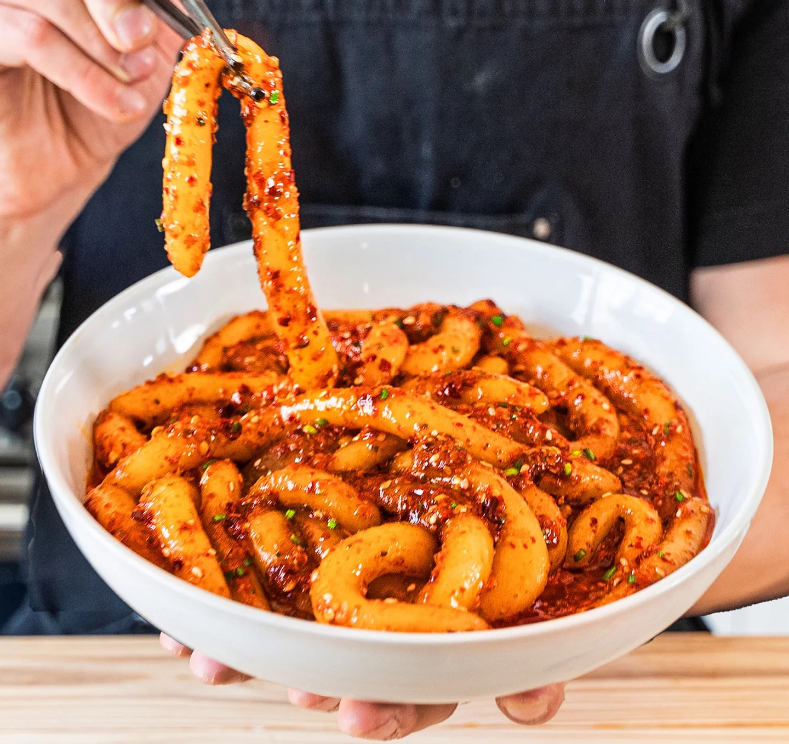

Chili Garlic Noodles

These noodles are THICK and pair perfectly in a spicy melt-your-face chili garlic sauce.
Ingredients
For The Noodles
- 2 medium yukon gold potatoes, peeled and quartered
- 1.5 cups (250g) potato starch
- 1/2 cup (75g) corn starch
- 3/4 cup (175mL) room temp water
- 2.5 qt (2.2L) water, plus more for boiling noodles
For The Chili Garlic Sauce
- 4 cloves garlic
- 2 green onion, finely chopped
- 1.5 tablespoons (12g) gochugaru
- 1.5 teaspoons crushed (7g) red pepper
- 1/2 teaspoon (3g) sugar
- 1.5 tablespoon (22g) dark soy sauce
- 1 tablespoon (17g) regular soy sauce
- 1 tablespoon(17g) chinese black vinegar
- 1/2 teaspoon (3g) MSG
- 2 teaspoon (10g) sesame seeds, lightly ground
- 1/3 cup (75g) vegetable oil
Instructions
Make The Noodles
- Add water to a large sauce pot and bring it to a boil.
- Put the potatoes into the pot, and cook the potatoes until tender.
- Mash the potatoes as finely as possible with a potato ricer.
- Mix corn starch, potato starch, and room temperature water together until combined and work the dough until it is smooth, about 2 minutes.
- With a knife, divide into 16 pieces, roll each piece into 6 inch long pieces.
- In a large pot, bring water to a boil, and add the noodles in. Be sure to be gentle as the noodles are delicate before they are cooked.
- When the noodles begin to float, notice the change in color and texture. They will swell, so be sure to stir the water to keep them from sticking.
- Test a noodle, by tasting it, once it is clear/opaque. When the noodles have finished cooking, strain and toss in sauce.
Make The Chili Garlic Sauce & Assemble
- In a small sauce pot or sauté pan, heat vegetable oil until it is very hot.
- Combine all ingredients except oil in a large heat proof bowl.
- Once the oil is hot, around 300-350 Fahrenheit. Pour your hot oil into that bowl and mix.
- Allow to sit for 5 minutes then toss in noodles to coat.